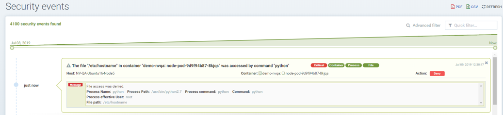
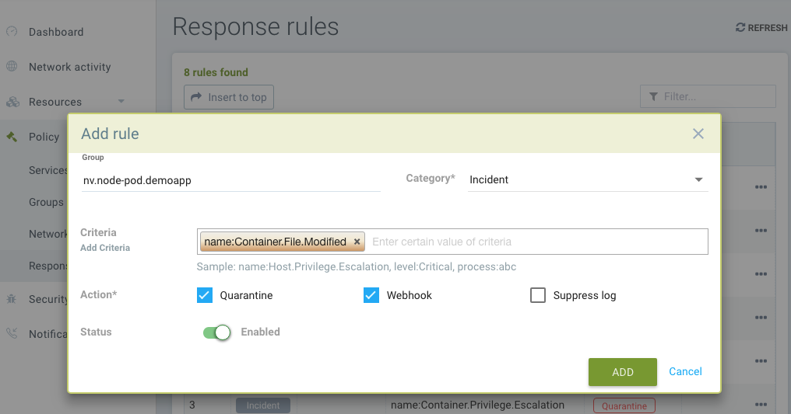

Normativas de acceso a archivos
Directiva: Normativas de acceso a archivos
Existen dos tipos de protecciones de Proceso/Archivo en SUSE® Security. Una es Zero-drift, donde la actividad permitida de procesos y archivos se determina automáticamente en función de la imagen del contenedor, y la segunda se basa en el aprendizaje conductual. Cada una puede ser personalizada (reglas añadidas manualmente) si se desea.
SUSE® Security tiene detección integrada de actividad sospechosa en el sistema de archivos. Los archivos sensibles en los contenedores normalmente no cambian en tiempo de ejecución. Al modificar el contenido de los archivos sensibles, un atacante puede obtener privilegios no autorizados, como en el ataque Dirty-Cow del kernel de Linux, o dañar la integridad del sistema, por ejemplo, manipulando el archivo /etc/hosts. La mayoría de los contenedores no se ejecutan en modo de solo lectura. Cualquier actividad sospechosa en contenedores, hosts, o en el propio contenedor de aplicación SUSE® Security, se detectará y registrará en Notificaciones → Eventos de Seguridad.
Protección de Archivos Zero-drift
Este es el modo predeterminado para las protecciones de procesos y archivos. Zero-drift permite automáticamente solo los procesos que se originan del proceso padre que está en la imagen original del contenedor, y no permite actualizar archivos ni la instalación de nuevos archivos. Cuando está en modo Descubrimiento o Monitor, zero-drift alertará sobre cualquier actividad sospechosa de procesos o archivos. En modo Proteger, bloqueará dicha actividad. Zero-drift no requiere que se añada la actividad de archivos a una lista blanca. Deshabilitar zero-drift para un grupo provocará que las reglas de procesos y archivos definidas para dicho grupo sean aplicadas en su lugar.
|
Las reglas de proceso/archivo listadas para cada grupo se aplican siempre, incluso cuando zero-drift está habilitado. Esto ofrece una forma de añadir excepciones de permitir/denegar a las protecciones base de zero-drift. Ten en cuenta que si un grupo comienza en modo Descubrimiento, se pueden añadir automáticamente reglas de proceso/archivo a la lista, y deben revisarse y editarse antes de pasar a los modos Monitor y Proteger. |
La capacidad de habilitar/deshabilitar el modo de deriva cero está en la consola en Grupos de Directiva →. Se pueden seleccionar múltiples grupos para alternar esta configuración para todos los grupos seleccionados.
Protecciones Básicas de Archivos
Si se detecta una instalación de paquete, se activará un reescaneo automático del contenedor o del host para detectar cualquier vulnerabilidad, SI se ha habilitado el escaneo automático en → Vulnerabilidades de Riesgos de Seguridad.
Además de monitorizar archivos/directorios predefinidos, los usuarios pueden añadir archivos/directorios personalizados para ser monitorizados, y bloquear dichos archivos/directorios de ser modificados.
|
SUSE® Security alertas, y no bloquea modificaciones a archivos/directorios predefinidos o en contenedores del sistema como los de Kubernetes. El bloqueo es solo una opción para archivos/directorios personalizados configurados por el usuario para contenedores no del sistema. Esto es para que las actualizaciones regulares de la carpeta del sistema o configuraciones sensibles no sean bloqueadas de manera involuntaria, resultando en un comportamiento errático del sistema. |
Los siguientes archivos y directorios son monitorizados por defecto:
-
Archivos ejecutables
-
Archivos sensibles setuid/setgid
-
Bibliotecas del sistema, libc, pthread, …
-
Instalación de paquetes, Debian/Ubuntu, RedHat/CentOS, Alpine
-
Archivos sensibles del sistema, /etc/passwd, /etc/hosts, /etc/resolv.conf …
-
Archivos ejecutables de procesos en ejecución
Las siguientes actividades son monitorizadas:
-
Archivos, directorios, enlaces simbólicos (enlace físico y enlace simbólico)
-
creados, eliminados, modificados (cambio de contenido) y movidos
A continuación se presenta una lista de la monitorización del sistema de archivos y lo que se monitoriza (contenedor, host/nodo, y/o el propio contenedor de aplicación SUSE® Security):
-
/bin, /usr/bin, /usr/sbin, /usr/local/bin - contenedor, contenedor de aplicación
-
Archivos con atributos setuid y setgid - contenedor, host, contenedor de aplicación
-
Bibliotecas: libc, pthread, ld-linux.* - contenedor, host, contenedor de aplicación
-
Instalación de paquetes: dpkg, rpm, apk - contenedor, host, contenedor de aplicación
-
/etc/hosts, /etc/passwd, /etc/resolv.conf - contenedor, host, contenedor de aplicación
-
Binarios de los procesos en ejecución - contenedor
Aplicaciones permitidas basadas en aprendizaje conductual en Modo Descubrimiento
Cuando está en Modo Descubrimiento, SUSE® Security puede aprender y añadir a la lista blanca aplicaciones SOLO para directorios o archivos especificados. Para habilitar el aprendizaje, se debe crear una regla personalizada y la Acción debe establecerse en Bloquear, como se describe a continuación.
Creación de Reglas de Monitoreo de Archivos/Directorios Personalizadas
Se pueden crear reglas de acceso a archivos personalizadas tanto para Grupos definidos por el usuario como para Grupos aprendidos automáticamente.
Los usuarios pueden añadir nuevas entradas para las reglas de archivos/directorios.
-
Filtro: Configura el archivo/carpeta que se va a proteger (se admiten comodines)
-
Establece la bandera recursiva (si se deben proteger todos los archivos en los subdirectorios)
-
Selecciona la acción, Monitorear o Bloquear (ver Acciones a continuación)
-
Introduce las aplicaciones permitidas (ver Nota1 a continuación)

Acciones:
-
Monitorea los cambios en los archivos. Genera alertas (Notificaciones) para cualquier cambio
-
Bloquear accesos no autorizados.
-
Servicio en Modo Descubrimiento: se aprende el comportamiento de acceso a archivos (los procesos/aplicaciones que acceden al archivo protegido) y se añade a las Aplicaciones Permitidas.
-
Servicio en Modo Monitor: se alerta sobre un comportamiento inesperado del archivo.
-
Servicio en Modo Proteger: se bloquea el acceso inesperado (lectura, modificación). La creación de nuevos archivos en carpetas protegidas también será bloqueada.
-
|
Si la regla está configurada para Bloquear, y el servicio está en modo Descubrimiento, SUSE® Security aprenderá las aplicaciones que acceden al archivo y las añadirá a las Aplicaciones Permitidas para la regla. |
|
Las plataformas de contenedores que ejecutan el controlador de almacenamiento AUFS no soportarán la acción de denegar (bloquear) en Modo Proteger para crear/modificar archivos debido a las limitaciones del controlador. El comportamiento será el mismo que en el Modo Monitor, alertando ante actividades sospechosas. |
Orden de precedencia de las reglas de acceso a archivos.
Un contenedor puede heredar reglas de acceso a archivos de múltiples grupos personalizados y de reglas de acceso a archivos creadas por el usuario en el grupo aprendido automáticamente.
Las reglas de acceso a archivos se priorizan en el orden siguiente si el nombre de archivo entra en conflicto con las reglas de acceso predefinidas del grupo aprendido automáticamente y la herencia de reglas de múltiples grupos.
-
Regla de acceso a archivos con acceso bloqueado (orden más alto).
-
Regla de acceso a archivos con recursividad habilitada.
-
Regla de acceso a archivos con recursividad deshabilitada.
-
Regla de acceso a archivos creada por el usuario distinta de las reglas de acceso a archivos predefinidas.
Ejemplos
Mostrando la regla de acceso a archivos para proteger el archivo /etc/hostname del servicio node-pod y permitir a la aplicación vi modificar el archivo.

Mostrando la regla de acceso a archivos para proteger, de forma recursiva, los archivos bajo el directorio /var/opt/ tanto para modificación como para lectura. La aplicación permitida python puede tener acceso de lectura y modificación a estos archivos.

Mostrando la regla de acceso que protege el archivo /etc/passwd, uno de los archivos abarcados por la regla de acceso predefinida, permitiendo tanto la lectura como la modificación. Esta regla personalizada cambia la acción predeterminada de la regla de acceso a archivos predefinida. La aplicación Nano puede tener acceso de 'lectura y modificación' a estos archivos. También se debe añadir la aplicación Nano (proceso) como una regla de 'permitir' en la regla del perfil de proceso para que este servicio ejecute la aplicación Nano dentro del servicio (si no estaba ya en la lista blanca), de lo contrario, el proceso será bloqueado por SUSE® Security.

Mostrando que la aplicación python fue aprendida accediendo al archivo en el directorio /var/opt cuando el modo de servicio del nodo-pod estaba en Descubrimiento. Esto ocurre solo cuando la regla está configurada en Bloquear y el servicio está en modo Descubrimiento.

Mostrando reglas de acceso a archivos predefinidas para el servicio node-pod.demo-nvqa. Esto se puede ver para este servicio haciendo clic en el icono de información “show predefined filters” en la esquina derecha de la pestaña de reglas de acceso a archivos.

Mostrando un evento de seguridad de muestra en Notificaciones → Eventos de Seguridad, alertado como Denegación de acceso al archivo cuando la modificación del archivo /etc/hostname por la aplicación python fue denegada debido a una regla de acceso a archivos personalizada con acción de bloqueo.

Otras Respuestas
Si se desean otras mitigaciones, respuestas o alertas especiales para Violaciones del Sistema de Archivos, se puede crear una Regla de Respuesta. Vea el ejemplo a continuación y la sección Política de Seguridad en Tiempo de Ejecución → Reglas de Respuesta para más detalles.

Protecciones de Archivos en Modo Dividido
Los grupos de contenedores pueden tener reglas de proceso/archivo en un modo diferente al de las reglas de red, como se describe aquí.